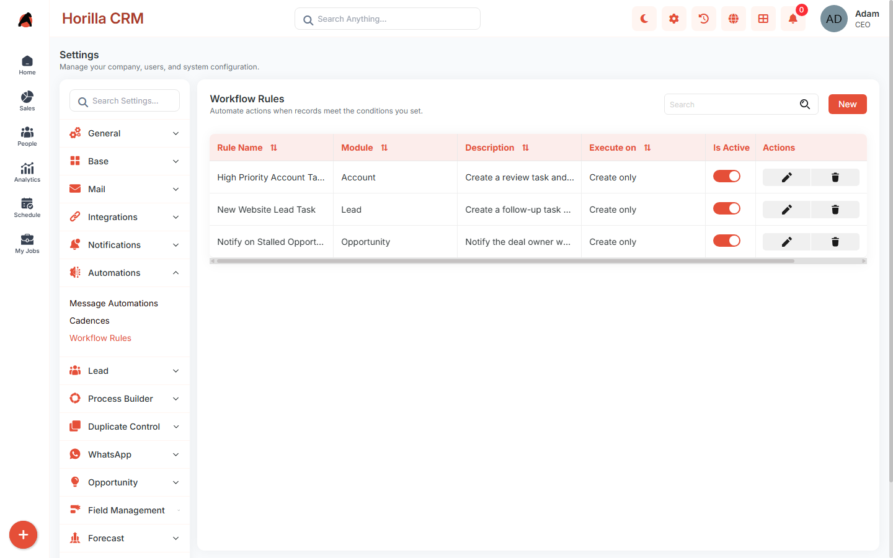
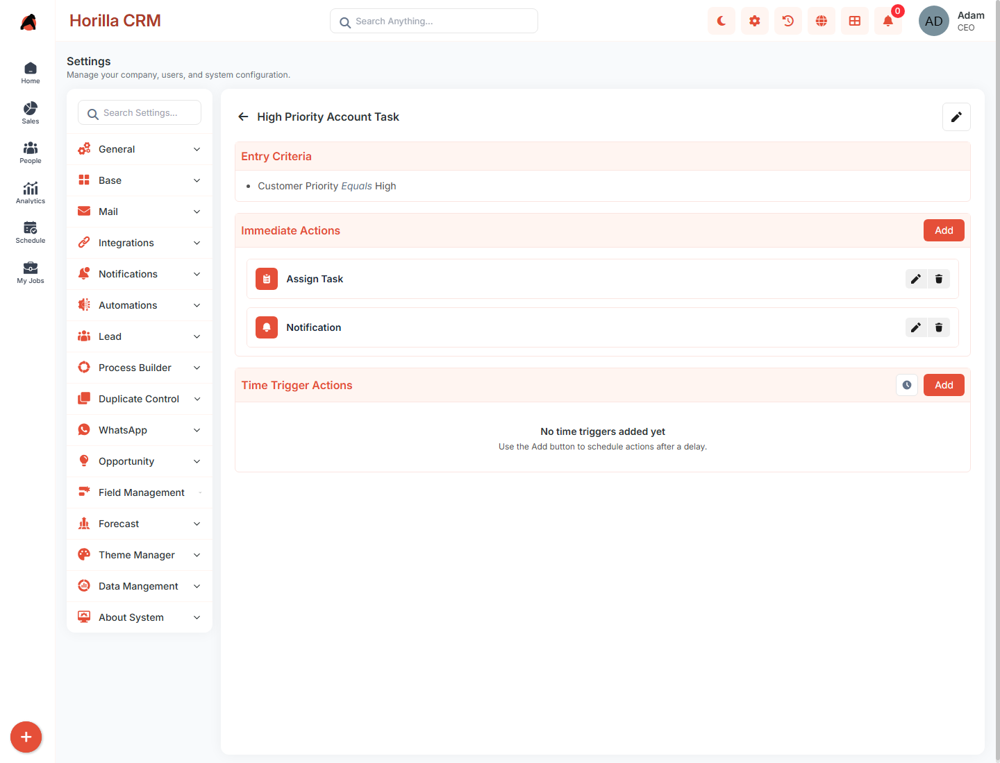

Overview
Go to Settings → Automations → Workflow Rules. The page description
is Automate actions when records meet the conditions you set.
New opens
the create form.
Each row shows Rule Name, Module, Description, Execute on, an Is Active switch, and edit and delete actions. A rule evaluates its conditions on a record and carries out the actions configured on the rule.

Rule Detail
Click a Rule Name in the list. The page title is the rule name, with a back arrow to the list and a pencil that opens the rule form.
Entry Criteria lists each condition. High Priority Account
Task uses Customer Priority Equals High
.
Immediate Actions run as soon as the rule matches. This rule has Assign Task and Notification. Each action has edit and delete. Add opens a new action.
Time Trigger Actions run after a delay. The clock button opens Execution History. With none saved, the section shows No time triggers added yet.
Use the Add button to schedule actions after a delay.

Expected Behaviour
- Turning Is Active off stops that rule from running.
- The rule name opens the detail page. Edit opens the rule form. Delete removes the rule after confirmation.
- A rule the user cannot view is absent from the list.